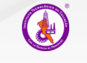
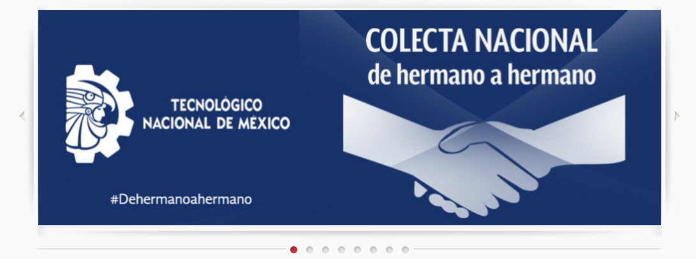
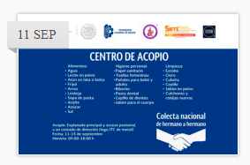
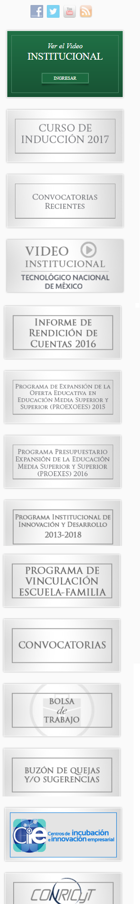

|  |
| Inicio | Tecnológico | Oferta educativa | Alumnos | Maestros | Noticias |
|  | ||
|  | Colecta Nacional #Dehermanoahermano del 11 al 15 de septiembre Como resultado de la devastación y daños ocasionados por el Sismo que afecto principalmente los estados de Oaxaca y Chiapas, el Tecnológico Nacional de México, convoco a los ... |
 |
Asiste a la primer función del club de cine del ITC
¡Te invitamos a ser parte de la primer función del club del cine!El Instituto Tecnológico de Culiacán en conjunto con El Centro de Información (Biblioteca) nos complace el ... |
||
| Colecta Nacional #Dehermanoahermano del 11 al 15 de septiembre Como resultado de la devastación y daños ocasionados por el Sismo que afecto principalmente los estados de Oaxaca y Chiapas, el Tecnológico Nacional de México, convoco a los ... |
||
| Carga de Actividades Complementarias Se Informa a los alumnos del 1er. al 6to. semestre, podrán cargar en línea las actividades complementarias, a partir del día 05 al 08 de septiembre 2017, en un ... |
||
| Convocatoria de certificación PET y FCE de Cambridge Fecha de pre-registro: 4 al 8 de septiembre del 2017. Nota: Favor de respetar las fechas, de lo contrario no se realizarán los tramites. Horario de atención: 8:00 a 14:00 hrs. de ..., en un ... |
||
| Convocatoria Examen EGEL (Diciembre 2017) El Instituto Tecnológico de culiacán a través de la subdirección académica y la división de estudios profesionales con la finalidad de reconocimiento profesional a los egresados de las instituciones de .. |
||
| CNBES | • | SUBES |
| Presidencia de la República • | Secretaría de Educación Pública • | Subsecretaría de Educación Superior • | Tecnológico Nacional de México |